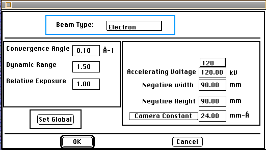

Distributed By: Virtual Labs
Beam Definition Dialog Box
PATH:Parameter Menu:Define Beam:
The Parameter Menu also lets you set the energy and convergence characteristics
of the Electron and X-ray and Ion beams. To do this you need to activate
the Beam Definition Dialog Box. From the Beam Definition Dialog Box you
can activate functions for definition the three beams.
These three dialog boxes allow the definition of the wavelength, the convergence
angle, the camera constant, the exposure time, the size of the exposed material
(negative) and the response curve of the recording medium. For the case
of the x-ray beam, both a maximum accelerating voltage and a characteristic
x-ray wavelength are entered. For the electron beam, the maximum accelerating
voltage is specified.

Beam Definition Dialog Box Setup for Electron Case.
Electron Beam Definition
PATH...Parameter Menu:Define Beam:<Select Electron From Beam Type
Popup
Menu>
Set the Accelerating Voltage; either by using the pop-up menu which
has a stored selection of common accelerating voltages or numerically in
the Electron Beam Definition:Accelerating Voltage; field of the Dialog Box.
The accelerating voltage is used to determine the wavelength of the electron.
See the chapter on Mathematics
of Desktop Microscopist for a detailed explanation of how the wavelength
is calculated. The Wavelength calculation is based on the relativistic effects.
The Negative Width; and Negative Height; determine how much of the screen
is used to plot a given diffraction pattern. This can be extremely useful
when working with complicated crystals.
This button changes the camera constant field to the
corresponding camera length. The .i.camera constant ;and/or camera length
essentially determine the magnification of the diffraction pattern. The
camera constant, the negative size and the wavelength determine the total
number of hkl values which are evaluated in the diffraction objects.
The .i.Convergence Angle; has two purposes. The first purpose is to set
the size of the diffraction disks in the CBED object and can be measured
from an experimental diffraction pattern. The second purpose is to set the
size of the Bulls-eye for experimental determination of d-spacings and angles
between diffraction intensity maximum. (This is explained in more detail
in the section on Cursors in Chapter VI.) The greater the convergence angle
the larger the disk and bulls-eye diameter.
Dynamic Range; and .i.Relative Exposure; control the size and relative number
of diffraction spots which are plotted by Desktop Microscopist. The greater
the dynamic range the more compressed the intensity response curve and the
greater the number of plotted spots. The equation for this function is documented
in the section on Mathematics. The Relative Exposure is used to set the
maximum size of a diffracting spot. Typical values for the dynamic range
are 1.5 and the relative exposure is 1.0.
This button sets the global default values to the currently
defined values.
To X-Ray Definition Dialog Box
Author: J.ames T.
Stanley
 Desktop
Manual:Dialog Boxes
Desktop
Manual:Dialog Boxes
Distributed By: Virtual Labs
Last Updated:1/12/96 Sat, Apr 27, 1996